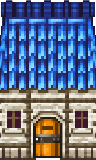
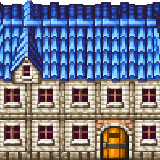
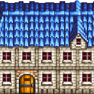
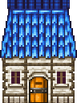
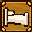
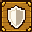
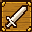

Altair Kit V1
Layered building and sign study · generated sources preserved byte-for-byte · bound in the Unity chapter build
Review the assembled building PNGs, each separate layer, sign/prop/terrain tiles, source hashes, entrance anchors, and runtime collision references. Reference matches remain approximate; the Unity chapter imports these layers from the AI-Art checkout.
Nine-building contact sheet
Item Shop
narrow shop shell · 96×160px · tile footprint 3×5

Anchor 48,160px · Ground footprint 0,128,96×32px · Collision none
Inspect layers
 facade · sha256 b2ae0495d232…
facade · sha256 b2ae0495d232… roof · sha256 68f03536440c…
roof · sha256 68f03536440c…Inn
wide inn shell · 160×160px · tile footprint 5×5

Anchor 110,160px · Ground footprint 0,128,160×32px · Collision none
Inspect layers
 facade · sha256 ec048839a132…
facade · sha256 ec048839a132… roof · sha256 59096960f73b…
roof · sha256 59096960f73b…Headquarters
L-shaped headquarters, hall plus doorless southeast wing · 224×288px · tile footprint 7×9

Anchor 112,160px · Ground footprint 0,0,224×288px · Collision none
Inspect layers
 facade · sha256 bef97035999e…
facade · sha256 bef97035999e… roof · sha256 10337d7bce9e…
roof · sha256 10337d7bce9e…Sanctuary
chapel shell · 224×160px · tile footprint 7×5

Anchor 112,160px · Ground footprint 0,128,224×32px · Collision none
Inspect layers
 facade · sha256 72510548c406…
facade · sha256 72510548c406… roof · sha256 2d65da399965…
roof · sha256 2d65da399965…Magic Shop
narrow shop shell · 96×160px · tile footprint 3×5

Anchor 48,160px · Ground footprint 0,128,96×32px · Collision none
Inspect layers
 facade · sha256 b2ae0495d232…
facade · sha256 b2ae0495d232… roof · sha256 68f03536440c…
roof · sha256 68f03536440c…Armor Shop
wide shop shell mirrored to place door at map cell 1 · 160×160px · tile footprint 5×5

Anchor 50,160px · Ground footprint 0,128,160×32px · Collision none
Inspect layers
 facade · sha256 1b061e7f14ee…
facade · sha256 1b061e7f14ee… roof · sha256 a22985190dce…
roof · sha256 a22985190dce…Home
narrow house shell · 96×160px · tile footprint 3×5

Anchor 48,160px · Ground footprint 0,128,96×32px · Collision none
Inspect layers
 facade · sha256 b2ae0495d232…
facade · sha256 b2ae0495d232… roof · sha256 68f03536440c…
roof · sha256 68f03536440c…Weapon Shop
wide shop shell mirrored to place door at map cell 1 · 160×160px · tile footprint 5×5

Anchor 50,160px · Ground footprint 0,128,160×32px · Collision none
Inspect layers
 facade · sha256 1b061e7f14ee…
facade · sha256 1b061e7f14ee… roof · sha256 a22985190dce…
roof · sha256 a22985190dce…Smithy
narrow house shell · 96×128px · tile footprint 3×4

Anchor 48,128px · Ground footprint 0,96,96×32px · Collision none
Inspect layers
 facade · sha256 e8cfe31f4ed5…
facade · sha256 e8cfe31f4ed5… roof · sha256 cc0595d5e3b5…
roof · sha256 cc0595d5e3b5…item
signs · 32×32px · source crop 90,84,354×354 · opaque square
Source sha256 6fc6b51ad4aa7a306172e99ec4b977ed6dfb4a2399d9ecfcd01636f88333b3cb · output sha256 dbf87d8a2946783da881087834eb776e1f767ad4dce501c4692bf22fc105a5f9 · Potion icon plaque; crop excludes outer glow.
inn
signs · 32×32px · source crop 592,84,354×354 · opaque square

Source sha256 6fc6b51ad4aa7a306172e99ec4b977ed6dfb4a2399d9ecfcd01636f88333b3cb · output sha256 d5d2ef210500401dba33af6732da86c33a394cefa44f585896cf00bf92269d4f · Bed icon plaque; crop excludes outer glow.
sanctuary
signs · 32×32px · source crop 1093,84,354×354 · opaque square
Source sha256 6fc6b51ad4aa7a306172e99ec4b977ed6dfb4a2399d9ecfcd01636f88333b3cb · output sha256 ba505b69964c8f7f446041b8e1bd0fe59b64849c08e43f1b83479f82fe5e21b3 · Star icon plaque; crop excludes outer glow.
magic
signs · 32×32px · source crop 90,584,354×354 · opaque square

Source sha256 6fc6b51ad4aa7a306172e99ec4b977ed6dfb4a2399d9ecfcd01636f88333b3cb · output sha256 2f97cbb007f2eab38170c490ee9fc1137507be1e9839f663673c70dc87e45b7e · Wand icon plaque; crop excludes outer glow.
armor
signs · 32×32px · source crop 592,584,354×354 · opaque square

Source sha256 6fc6b51ad4aa7a306172e99ec4b977ed6dfb4a2399d9ecfcd01636f88333b3cb · output sha256 a6e84fa7d41e9e3f6b58788829a4e740fb9d68020ed46bba92e724b895cc7800 · Shield icon plaque; crop excludes outer glow.
weapon
signs · 32×32px · source crop 1093,584,354×354 · opaque square

Source sha256 6fc6b51ad4aa7a306172e99ec4b977ed6dfb4a2399d9ecfcd01636f88333b3cb · output sha256 edd2fdabb856b3e0f5b02597f133f7a536e087ce04a8371dab28058ed2b25ce9 · Sword icon plaque; crop excludes outer glow.
fountain
props · 64×64px · source crop 167,226,921×851 · transparent

Source sha256 06fbec74b76bef2a2a5c3cc93f8753711918925edc6738aca09997ede73c8aa1 · output sha256 33f9ee2d23261e8130f5cbc5c6754c9f6ba621202e634a202d44920c9f026a1c · Alpha-trimmed generated fountain, nearest-neighbor resized to 64×64.
steps
terrain · 32×32px · source crop 0,0,1254×1254 · transparent

Source sha256 1cdc1da7fa71cd802c8a3003c738ef6bfe6322114d8075d910eb654db5556328 · output sha256 72a2942a274f5727cbc30b0043fb7639eff236ffa4a93b3031c4d9645c0d5232 · Opaque cream sandstone outdoor stair tile; horizontal treads connect beside copies; vertical north-south traversal